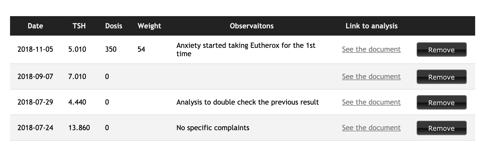
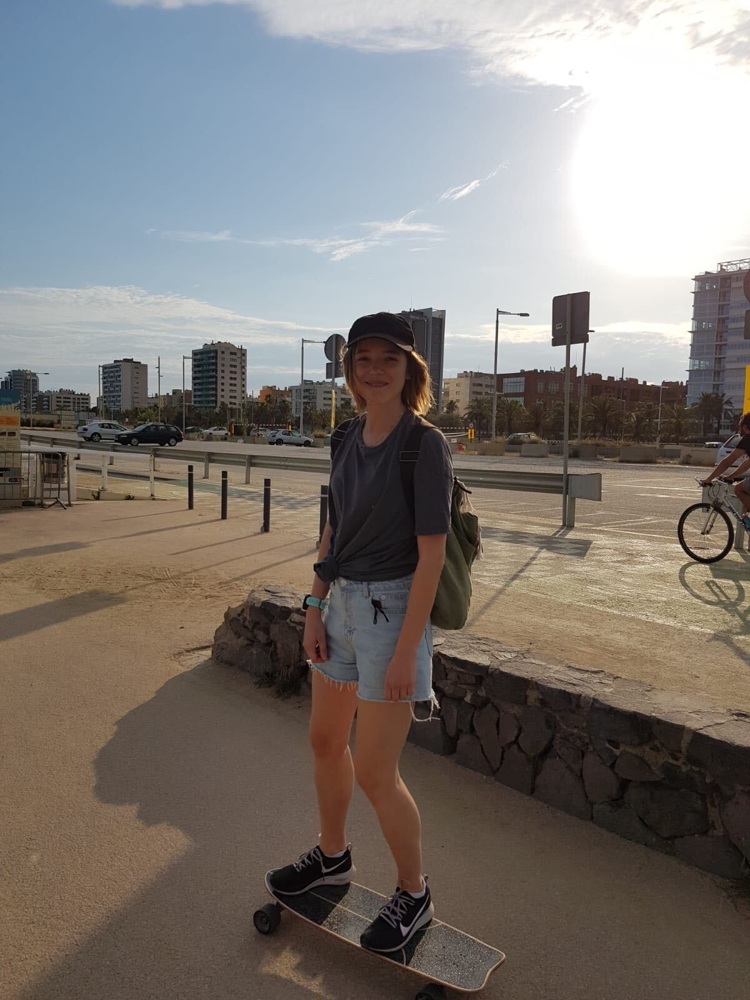
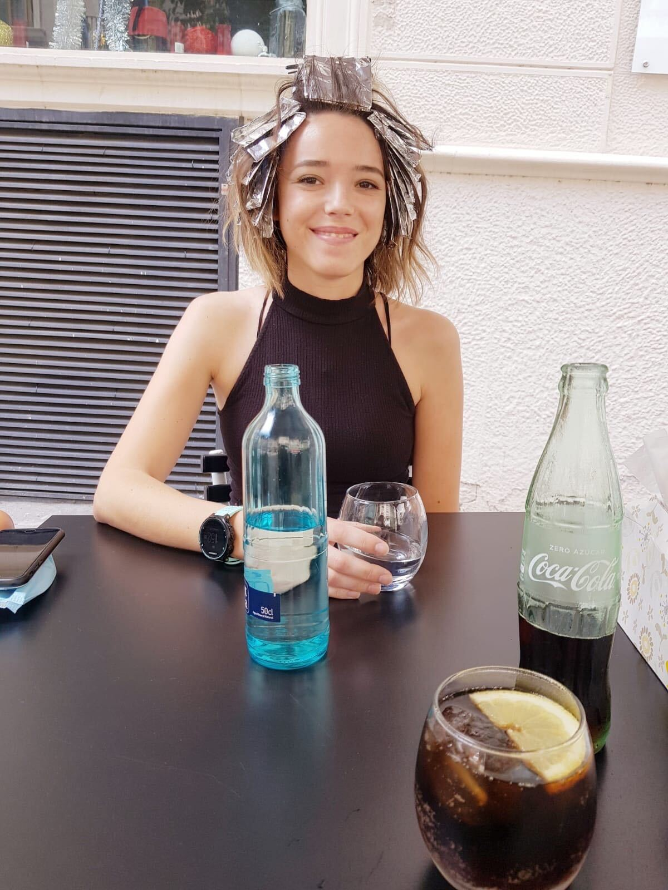
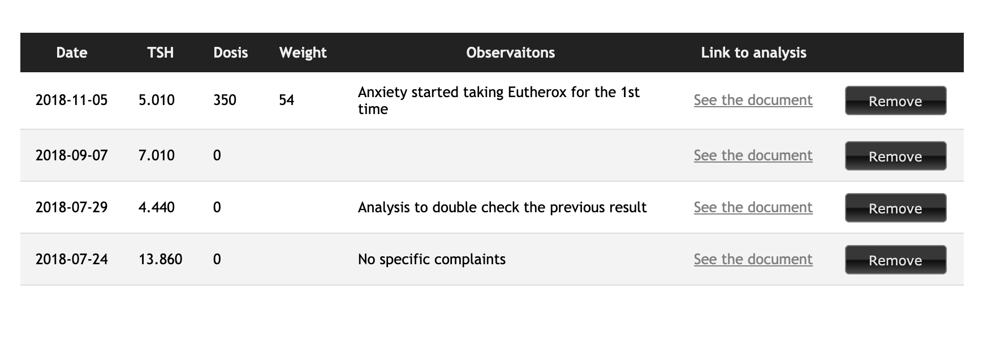
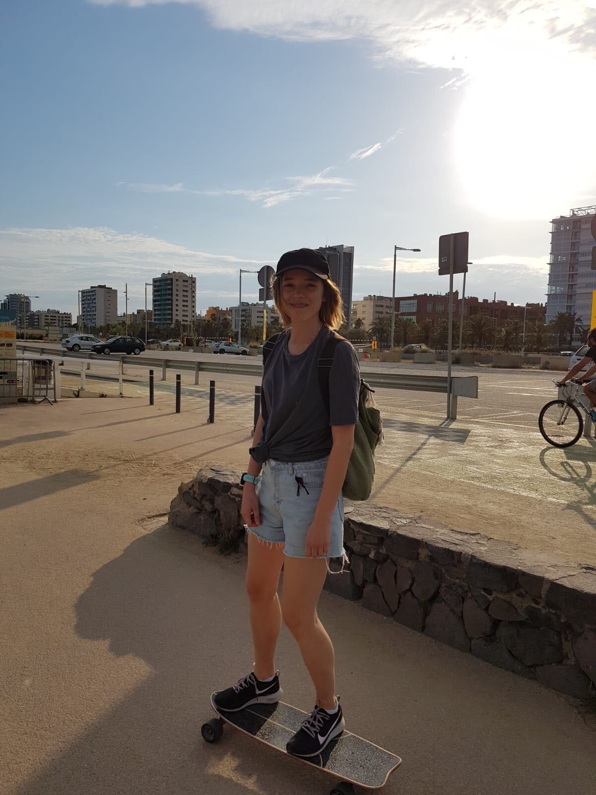
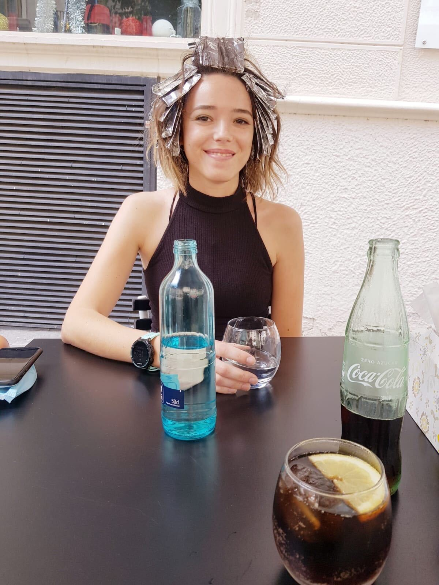
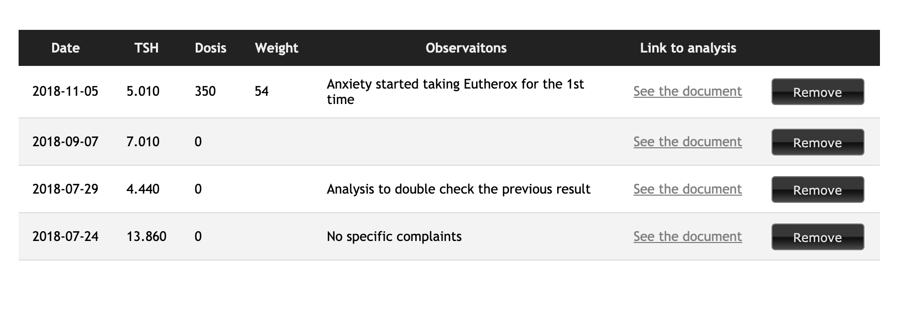
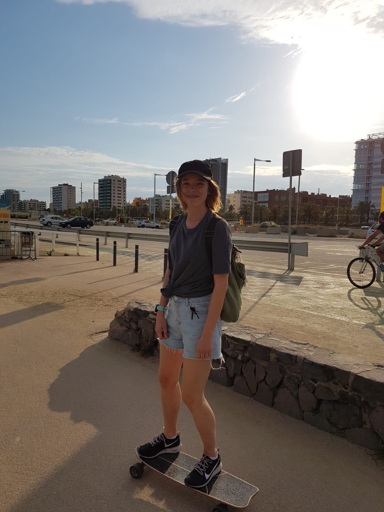
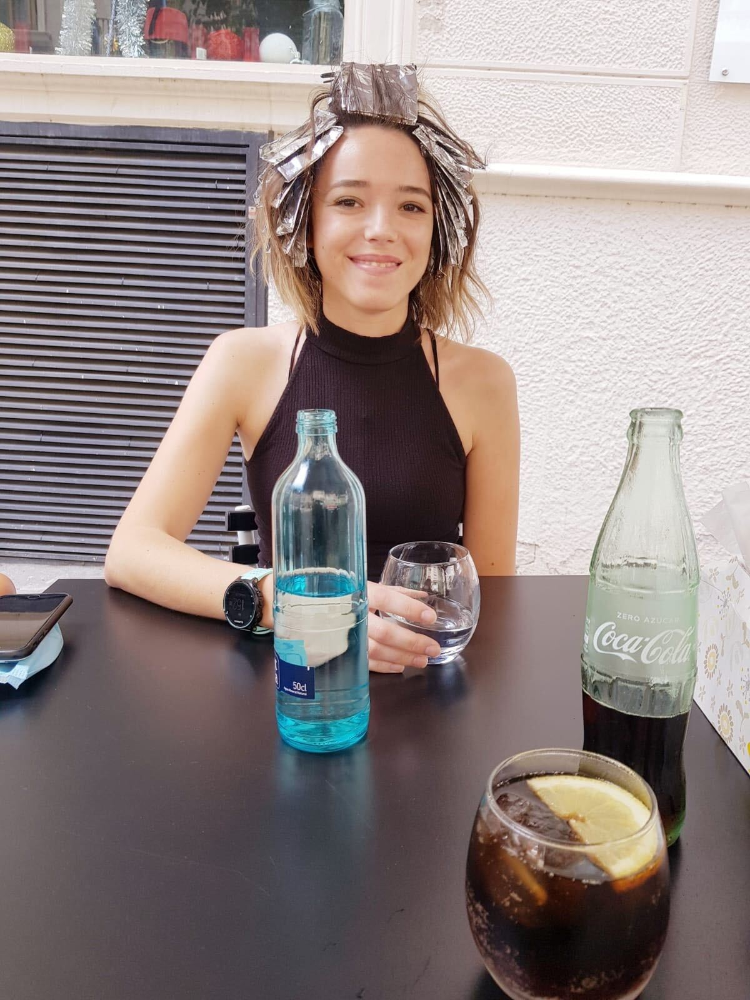
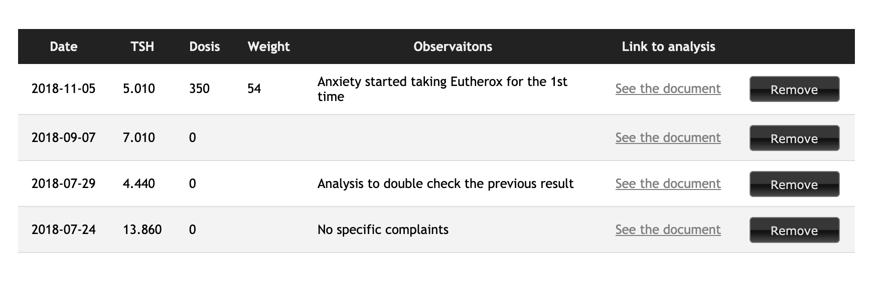
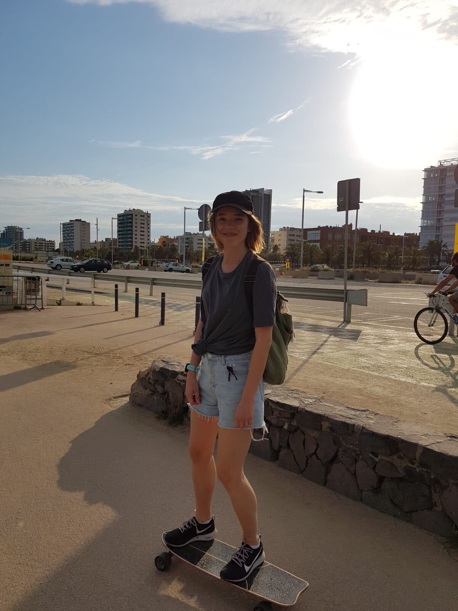
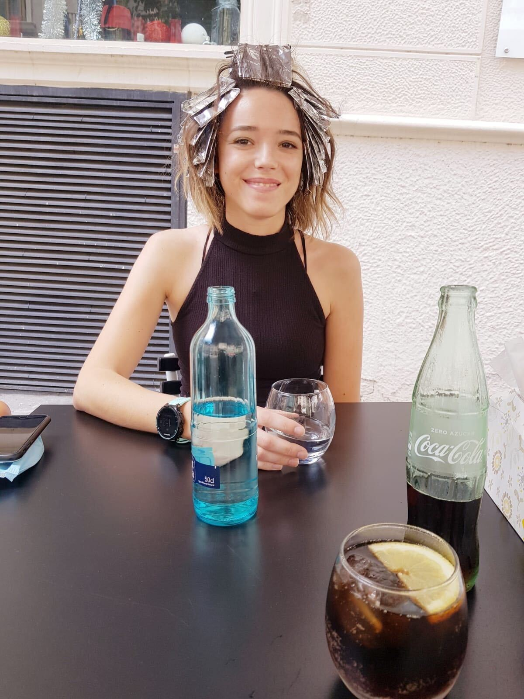
I am a product owner at Marfeel and a UPF MSc in Cognitive Systems and Interactive Media, with a background in software development and finance. I have worked on the development of BI and transport security systems, online marketplaces, CRM, PRM and self-care portals for telecom companies.
Most of my experience refers to leading remote and onsite teams in international project-oriented environments. My current interests lie in data science and I am curious about possible commercial applications for ANNs and machine learning technologies.
I am from Russia (Moscow), moved to Barcelona in 2018 and blablablabla
Duis cursus. Maecenas ligula eros, blandit nec, pharetra at, semper at, magna. Nullam ac lacus. Nulla facilisi. Praesent viverra justo vitae neque. Praesent blandit adipiscing velit. Suspendisse potenti. Donec mattis, pede vel pharetra blandit, magna ligula faucibus eros, id euismod lacus dolor eget odio. Nam scelerisque. Donec non libero sed nulla mattis commodo. Ut sagittis. Donec nisi lectus, feugiat porttitor, tempor ac, tempor vitae, pede. Aenean vehicula velit eu tellus interdum rutrum. Maecenas commodo. Pellentesque nec elit. Fusce in lacus. Vivamus a libero vitae lectus hendrerit hendrerit.
Not yet created
Duis cursus. Maecenas ligula eros, blandit nec, pharetra at, semper at, msagna. Nullam ac lacus. Nulla facilisi. Praesent viverra justo vitae neque. Praesent blandit adipiscing velit. Suspendisse potenti. Donec mattis, pede vel pharetra blandit, magna ligula faucibus eros, id euismod lacus dolor eget odio. Nam scelerisque. Donec non libero sed nulla mattis commodo. Ut sagittis. Donec nisi lectus, feugiat porttitor, tempor ac, tempor vitae, pede. Aenean vehicula velit eu tellus interdum rutrum. Maecenas commodo. Pellentesque nec elit. Fusce in lacus. Vivamus a libero vitae lectus hendrerit hendrerit.